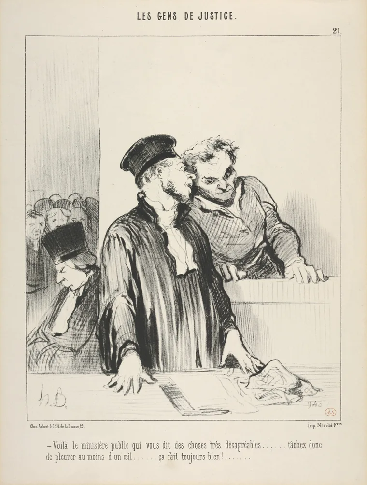

Cidadania, módulo 1, sessão 07
Nove contra dois
Versão para imprimir: o material, os 14 exercícios e o papel do fim. Fazes tudo sozinho, só com uma caneta.
Parte 1, ver antes de concluir
Abre: Nove contra dois
Caso inventado.
A turma prepara uma peça para o fim do período. No grupo da turma aparece um vídeo do ensaio, montado para gozar com a Sara. Uma captura de ecrã mostra a conta que o publicou: tem o nome do Tomás. De braço no ar, nove colegas dizem que foi ele; dois pedem para ver primeiro as provas.
Uma captura de ecrã chega para culpar alguém?
Decide
O Tomás deve sair já da peça?
☐ Sim ☐ Não ☐ Depende
Escreve, numa linha, a razão que pesa mais para ti.
Exercício 1: O voto que ficou sozinho
No filme Doze Homens em Fúria, um júri decide se um rapaz matou o pai. Ao início, onze votam «culpado» e um vota «não culpado». O que diz esse voto?
- Que ele quer contrariar a opinião da maioria.
- Que, para ele, a culpa ainda não está provada.
- Que ele acredita que o rapaz está inocente.
Resposta: ______
Exercício 2: Nove vezes a mesma frase
Caso inventado: nove colegas partilham a mesma mensagem, «Foi o Tomás». Assim, há nove provas contra ele.
☐ Verdadeiro ☐ Falso
Olha: Um tribunal, em 1846
Antes de olhar Olha primeiro para as figuras; só depois lê a legenda.

Honoré Daumier, «Voilà le ministère public qui vous dit des choses très désagréables…», prancha 21 de Les Gens de Justice, 24 de agosto de 1846, litografia. The Metropolitan Museum of Art, Nova Iorque (2013.999.1). Registo de origem. Domínio público; a imagem do museu é CC0.
Exercício 3: O que se vê e o que se diz
Para cada frase: vê-se na litografia, só a legenda o diz, ou nenhuma das duas o prova?
- Um deles aconselha o outro a chorar.
- As lágrimas convenceram o tribunal.
- Dois homens têm os rostos quase encostados.
- Vê-se na litografia
- Só a legenda o diz
- Nenhuma das duas o prova
Liga: 1 ___ 2 ___ 3 ___
Exercício 4: Comover não é provar
Se o acusado chorar, como lhe aconselham, o tribunal fica com uma prova de que está inocente.
☐ Verdadeiro ☐ Falso
Lê: Quem prova, quem é ouvido
Antes de ler Quem prova a culpa? E quem é ouvido?
Artigo 32.º«Todo o arguido se presume inocente até ao trânsito em julgado da sentença de condenação […]»
Artigo 11.º«Toda a pessoa acusada de um acto delituoso presume-se inocente até que a sua culpabilidade fique legalmente provada […]»
Artigo 32.º«[…] em quaisquer processos sancionatórios, são assegurados ao arguido os direitos de audiência e defesa.»
Constituição, artigo 32.º, n.os 2 e 10; Declaração Universal, artigo 11.º
«Trânsito em julgado»: já não há recurso.
Declaração Universal, artigo 10.º«[…] a que a sua causa seja equitativa e publicamente julgada por um tribunal independente e imparcial […]»
Convenção sobre os Direitos da Criança, artigo 12.º, n.º 2«[…] é assegurada à criança a oportunidade de ser ouvida nos processos judiciais e administrativos que lhe respeitem […]»
Exercício 5: Antes de ser culpado
No artigo 11.º, sublinha as duas palavras que dizem o que tem de acontecer à culpa antes de alguém ser tratado como culpado.
Toda a pessoa acusada de um acto delituoso presume-se inocente até que a sua culpabilidade fique legalmente provada no decurso de um processo público em que todas as garantias necessárias de defesa lhe sejam asseguradas.
Exercício 6: Onde começa a conclusão
Alguém escreve no grupo da turma esta frase. Sublinha as duas palavras onde deixa de dizer o que se sabe e passa a concluir.
O Tomás estava online quando o vídeo apareceu, por isso foi ele que o publicou.
Exercício 7: Antes do castigo
Caso inventado: há fotografias claras de um aluno a riscar uma parede da escola. Assim, a direção pode castigá-lo sem o ouvir.
☐ Verdadeiro ☐ Falso
Exercício 8: O que a captura prova
Com a captura de ecrã na mão, o que se pode afirmar com segurança sobre o Tomás?
- Que uma conta com o nome dele publicou o vídeo.
- Que ele quis gozar com a Sara diante da turma.
- Que foi ele quem montou e publicou o vídeo.
Resposta: ______
Conceito: Prova e inferência
O caso
A conta tem o nome do Tomás. Nove dizem que foi ele.
Mais perto
| Prova | Supõe-se | O que falta |
|---|---|---|
| a conta com o nome | foi ele que publicou | quem criou a conta |
| nove mãos no ar | foi ele | quem viu |
O nome
Inferência
Uma conclusão que vai além do que a prova mostra.
O que não é
Não é mentira: pode estar certa, mas falta confirmá-la. Votar conta posições; deliberar pesa razões.
Exercício 9: Quando a prova muda
Caso inventado, noutra escola: um aluno foi castigado por causa de uma captura. Põe por ordem o que aconteceu e o que daí se conclui.
- A escola revê a decisão e diz à turma que mudou.
- A prova em que o castigo assentava deixou de chegar.
- O castigo assentou numa captura com o nome do aluno.
- Depois, outro aluno confessa que foi ele que o fez.
Ordem: ___ → ___ → ___ → ___
Exercício 10: Um caso real
Caso real (Relação de Évora, 2023): condenado por um vídeo publicado numa conta de Instagram com o seu nome e dia de anos, um jovem recorreu. Porque foi absolvido?
- Ficou provado que outra pessoa criou aquela conta.
- Publicar o vídeo de uma detenção policial não é crime.
- Não se provou que aquela conta era mesmo dele.
Resposta: ______
Parte 2, pesar e escrever
Volta ao caso: O que diz o Tomás
Parte 2
Caso inventado.
A direção vai decidir se castiga o Tomás. Ele diz que a conta não é dele e que nunca a criou. Os nove insistem: «Somos nove a dizer que foi ele.» A Sara já não quer ir aos ensaios enquanto o vídeo circular, e a estreia é daqui a uma semana.
Exercício 11: Proteger sem castigar
Pedir que o vídeo seja apagado do grupo da turma, antes de se saber quem o fez, já é castigar o Tomás.
☐ Verdadeiro ☐ Falso
Em turma
O Tomás deve sair já da peça?
☐ Sim ☐ Não ☐ Depende
Compara com a tua escolha do início. O que pesou mais, para ti? ☐ A captura com o nome ☐ O Tomás não ter sido ouvido ☐ O que a Sara está a passar
Exercício 12: Facto, regra ou razão
Liga cada frase ao que ela é numa justificação.
- Uma conta com o nome do Tomás publicou o vídeo.
- «Somos nove a dizer que foi ele.»
- «Todo o arguido se presume inocente […]»
- A razão de uma das partes
- Uma regra escrita num texto legal
- Um facto do caso
Liga: 1 ___ 2 ___ 3 ___
Exercício 13: A fonte que falta
Facto: a direção vai decidir se castiga o Tomás. Aplicação: antes, tem de o ouvir. Limite: ouvi-lo não prova que diz a verdade. Falta a fonte: onde se apoia?
- Ninguém pode sofrer ataques à sua honra e à sua reputação.
- Quem pode ser castigado tem direito a ser ouvido e a defender-se.
- Toda a pessoa tem direito a exprimir livremente a sua opinião.
Resposta: ______
Exercício 14: O que as provas permitem
Escolhe a conclusão que fica dentro do que o caso e os textos mostram.
- O vídeo deve sair já; quem o fez ainda está por provar.
- Foi o Tomás: a captura e os nove votos chegam para isso.
- Não foi o Tomás: ninguém o viu criar aquela conta.
Resposta: ______
Agora, em papel
Num papel pequeno, sozinho e sem telemóvel.
Uma captura de ecrã chega para culpar alguém?
CódigoData
- A tua conclusão, por agora.
- Uma prova: um facto do caso e uma expressão exata, entre aspas, com o artigo.
- Uma dúvida que ainda tens.
O que conta
- A conclusão responde à pergunta sem ir além das provas.
- A prova junta um facto a uma expressão exata, com o artigo.
- A dúvida, respondida, podia mudar a conclusão.
Um exemplo, sobre outro caso
Outro caso, inventado: a câmara do bar filma o Luís a guardar uma carteira do balcão.
- Conclusão: a prova é forte, mas falta ouvir o Luís.
- Prova: o vídeo mostra-o com a carteira; e o arguido tem «os direitos de audiência e defesa» (artigo 32.º, n.º 10).
- Dúvida: a carteira era de quem?